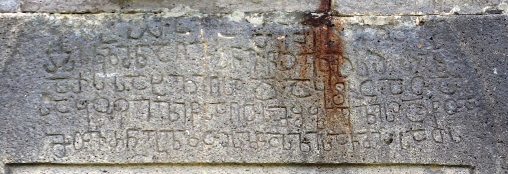

ზემო ნიქოზის მთავარანგელოზის ტაძრის საამშენებლო წარწერა მიქაელ ეპისკოპოსისაArchangel Church of Zemo Nikozi, building inscription of Bishop Michael
ზემო ნიქოზის მთავარანგელოზის ტაძრის საამშენებლო წარწერა მიქაელ ეპისკოპოსისა
Archangel Church of Zemo Nikozi, building inscription of Bishop Michael
შინაარსი / Summary
საამშენებლო Building
ბიბლიოგრაფია Bibliography
კრიტიკული გამოცემა Interpretive Edition
† ს(ა)ხ(ე)ლ(ი)თა ღ(მრთისაჲთ)ა მე მ(ი)ქ(აე)ლ ნ(ი)ქ(ო)ლ(ე) ებ -
ჲსსკ(ოპო)ზმ(ა)ნ აღვ(ა)შ(ე)ნე წ(მიდა)ჲ ეკლ(ე)ს(ია)ჲ რ(ომე)ლ
არს სახლი ღ(მრთი)ს(ა)ჲ და ბჭჱ ცათაჲ
საყოფელი წ(მიდი)სა ღ(მრ)თ(ი)სმშ(ო)ბელის(ა)ჲ და წ(მიდა)თა
5მთ(ა)ვ(ა)რ(ა)ნგ(ე)ლ(ო)ზთ(ა)ჲ ს(ა)ლ(ო)ც(ველა)დ ს(უ)ლისა ჩ(ე)მისათ(ჳ)ს
დიპლომატიური გამოცემა Diplomatic Edition
† ႱႾႪႧႠ ႶႠ ႫႤ ႫႵႪ ႬႵႪ ႤႡ
ჂႱႱႩႦႫႬ ႠႶႥႸႬႤ ႼჂ ႤႩႪႱჂ ႰႪ
ႠႰႱ ႱႠႾႪႨ ႶႱჂ ႣႠ ႡႽჁ ႺႠႧႠჂ
ႱႠႷႭႴႤႪႨ ႼႱႠ ႶႧႱႫႸႡႤႪႨႱჂ ႣႠ ႼႧႠ
5ႫႧႥႰႬႢႪႦႧჂ ႱႪႺႣ ႱႪႨႱႠ ႹႫႨႱႠႧႱ

ზემო ნიქოზის მთავარანგელოზის ტაძრის საამშენებლო წარწერა მიქაელ ეპისკოპოსისა
{'default': '† ღვთის სახელით მე, მიქაელ ნიქოზელმა ეპისკოპოსმა, აღვაშენე წმიდა ეკლესია, რომელიც არის სახლი ღმრთისა და ბჭე ცისა,\n საყოფელი წმიდისა ღმრთსმშობელისა და წმიდათა მთავარანგელოზთა, სალოცველად სულისა ჩემისა. In the name of the God, I, Bishop Michael of Nikozi built this holy church, which is the house of the God and the gate to the heavens, home of holy Mary, mother of Jesus and of the Archangel, for praying for my soul.'}
{'default': 'ნოდარ შოშიაშვილის ქართული წარწერების კორპუსის მიხედვით #93. წარწერას განკვეთილობის ნიშნები არ ახლავს. სიტყვები ერთმანეთისგან არ არის დაცილებული.\n წარწერის დათარიღების პალეოგრაფიული საფუძველია: გრაფემების მოყვანილობა: გრაფემა Ⴊ-ს წრე ზოგჯერ ძალიან დიდია და მოკლე ყელი უერთდება წრეს შუა ადგილზე;\n გრაფემა Ⴔ-ს ბუნი არ კვეთს წრეს; გრაფემა Ⴢ-ს ზედა კიდე მარცხნივაა ძლიერ გაზიდული და დიდად სცილდება ქვედა კიდეს; Ⴌ-ს გამხედრულება;\n გრაფემების ჩამოგრძელება, მიდრეკილება ოთხხაზოვანი ბადისაკენ. სიტყვების გადაბმა, განკვეთილობის გარეშე წერა. ლიგატურა; ორთოგრაფია:\n Ⴢ-ს ხმარება Ⴈ-ს ნაცვლად. ეკლესიის ხუროთმოძღვრული ნიშნები და ჩუქურთმები.\n ამ წარწერის ზემოთ მარჯვენა კედლის წყობის ქვის ქვედა მარცხენა კუთხეში ამოკვეთლია ოთხი მთავრული გრაფემა: Ⴟ~Ⴈ ႱႨ - ჯ(უარ)ი (ქრისტე)სი.\n მარი ბროსეს აღნიშნული აქვს კიდევ ორი სიტყვა: ႫႵႪ ႤႡႩႦႨ - მ(ი)ქ(აე)ლ ებ(ის)კ(ოპო)ზი, ეს სიტყვები აღარ ჩანს. ი. მეგრელიძეს ვერ შეუნიშნავს Ⴟ~Ⴈ ႱႨ. According to the Corpus of Georgian Inscriptions by Nodar Shoshiashvili the inscription #93. The inscription does not contain any mark of separation. No spaces between the words. Dating the inscription according to the paleographic data: shape of the graphemes, Ⴊ has quite big circle and short neck joins the circle in the middle; the base of the grapheme Ⴔ does not exceed the circle; the upper left edge of the letter Ⴢ is leaned and departs from the lower edge. Letter Ⴌ is represented with Mkhedruli alphabet; tendency of lengthen the letters to adjust the four line format. Words follow each other without leaving out the space. Ligature; orthography: usage of Ⴈ instead of Ⴢ. Ornaments and carvings of the church.\n Four capital letters graphemes are engraved above this inscription on the low left corner of the stone along the wallstones of the right wall: Ⴟ~Ⴈ ႱႨ - ჯ(უარ)ი (ქრისტე)სი cross of Jesus. Marie Brosset mentions two more words: : ႫႵႪ ႤႡႩႦႨ - მ(ი)ქ(აე)ლ ებ(ის)კ(ოპო)ზი Bishop Michael, those words are not visible currently. I. Megrelidze also had not noticed the following graphemes: Ⴟ~Ⴈ ႱႨ.'}
<div type="edition" xml:lang="ka" ana="mtavruli" xml:space="preserve">
<ab>
<lb n="1"/><w lemma="ქრისტე"><expan><abbr>ქ</abbr><ex>რისტ</ex><abbr>ე</abbr></expan></w>
<w lemma="განსუენება"><expan><abbr>გა</abbr><ex>ნ</ex><abbr>ო</abbr><ex>ჳ</ex><abbr>ს</abbr><ex>უ</ex><abbr>ენე</abbr></expan></w>
<w lemma="სულ">სოჳ<lb n="2" break="no"/>ლსა</w>
<name nymRef="ვაჩა">ვაჩაჲს<lb n="3" break="no"/>ასა</name>
<name nymRef="გურა"><expan><abbr>გო</abbr><ex>ჳ</ex><abbr>რაჲ<lb n="4" break="no"/>სასა</abbr></expan></name>
<name nymRef="მირა"><expan><abbr>მ</abbr><ex>ი</ex><abbr>რა</abbr><ex>ჲ</ex><abbr>ს</abbr><ex>ა</ex><abbr>ს</abbr><ex>ა</ex></expan></name>
</ab>
</div>